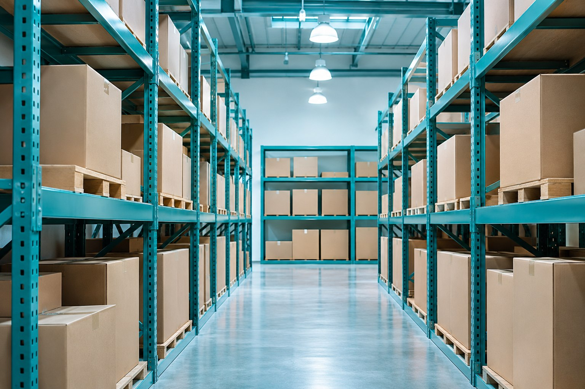
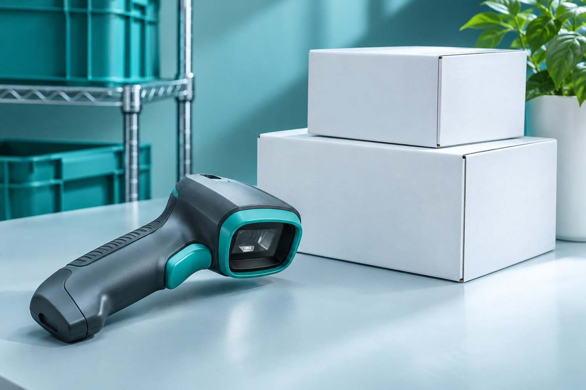
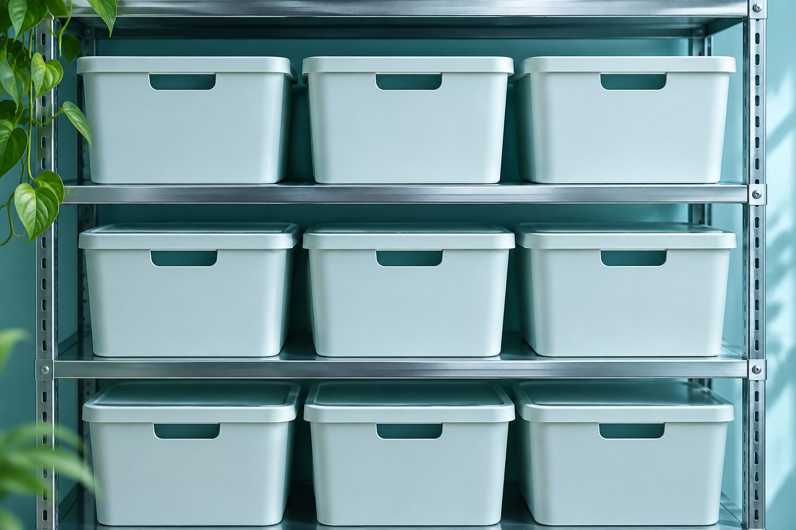

9:41 ● ▰
Склад / участок А
Порядок
по ячейкам

Пересчёт без бумажной ведомости. Расхождения видны сразу.
MVP приложения
от 385 000 ₽
1. Начать смену
Склад / участок А

Пересчёт без бумажной ведомости. Расхождения видны сразу.
2. Найти ячейку
Имитация сканирования. Камера не используется.

3. Пересчитать
Ячейка А-05
Считайте закрытые коробки целиком. Вскрытые упаковки проверьте отдельно.
4. Расхождение
Проверка результата
Проверьте соседние ячейки и зафиксируйте причину расхождения.
Без причины расхождение не закрывается.
5. Ведомость
Участок А / ячейка А-05
| Учёт | 24 шт. |
|---|---|
| Факт | 22 шт. |
| Разница | −2 шт. |
Требуется проверка
Изменение складских остатков согласует ответственный.
Пример — концепт для портфолиоУчётная система не подключена.
